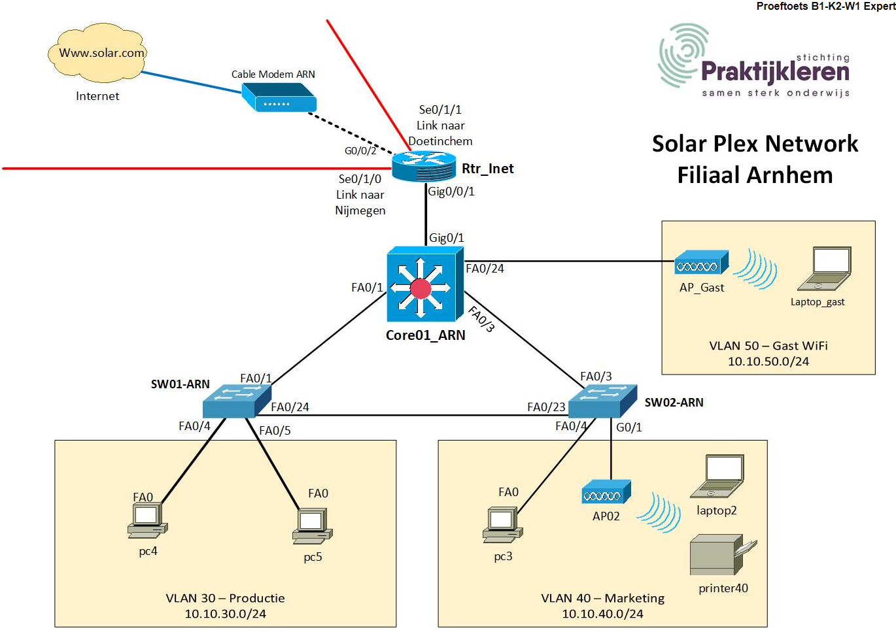

Topologie

Projectcontext
Solar Plex is een duurzame energiebedrijf met vestigingen in Nijmegen (hoofdkantoor), Doetinchem en Arnhem. De netwerken in Nijmegen en Doetinchem zijn bestaande omgevingen. In Arnhem is een nieuwe werkplaats ingericht en het netwerk was nog niet afgerond. De opdracht is om dit netwerk volledig te configureren en op te zetten in Cisco Packet Tracer.
Het Arnhemse netwerk bedient twee VLANs voor productie- en marketingafdelingen, plus een apart gast-WiFi VLAN met ACL-beveiliging zodat gasten niet bij het intranet kunnen.
Opdracht 1 — Hardware vervangen
Vervang de NIC's volgende apparaten
| Apparaat | Model | Uitbreidingskaart | Type |
|---|
| Laptop_gast | Generiek | WPC300N | Wireless 2.4 GHZ |
| Laptop 2 | Generiek | WPC300N | Wireless 2.4 GHZ |
| Printer0 | Generiek | WMP300N | Wireless 2.4 GHZ |
Procedure per apparaat
Voer de volgende stappen uit voor Laptop_gast, Laptop2 en Printer0:
1. Klik op het apparaat om de eigenschappen te openen.
2. Ga naar het tabblad Physical.
3. Zet het apparaat uit (klik op de aan/uit-knop).
4. Sleep de bestaande NIC uit de sleuf.
5. Sleep de juiste draadloze kaart vanuit het paneel aan de linkerkant in de sleuf.
6. Zet het apparaat weer aan.
Laptops (Laptop_gast & Laptop2): WPC300N (PCIe WiFi 2.4 GHz)
Printer0: WMP300N (PCI WiFi 2.4 GHz)
Na het plaatsen van de kaart kan het apparaat verbinding maken met een draadloos toegangspunt. Zonder deze stap zijn de WiFi-instellingen niet zichtbaar in de interface van het apparaat.
Opdracht 2 — Bouwen en configureren
Algemeen
A. Haal de apparaten uit de voorraadkast en bouw het netwerk in Arnhem, sluit alle apparaten aan.
Haal alle apparaten op uit de voorraadkast en sluit ze aan volgens de aansluitingstabel. Let op het onderscheid tussen trunk- en access-poorten:
| Van | Poort | Naar | Poort | Type |
|---|
| Core01_ARN | Fa0/1 | SW01-ARN | Fa0/1 | Trunk |
| Core01_ARN | Fa0/3 | SW02-ARN | Fa0/3 | Trunk |
| Core01_ARN | Fa0/24 | AP_Gast | Port0 | VLAN 50 |
| SW01-ARN | Fa0/24 | SW02-ARN | Fa0/23 | Trunk |
| SW01-ARN | Fa0/4 | PC4 | Fa0 | VLAN 30 |
| SW01-ARN | Fa0/5 | PC5 | Fa0 | VLAN 30 |
| SW02-ARN | Fa0/4 | PC3 | Fa0 | VLAN 40 |
| SW02-ARN | G0/1 | AP02 | Port0 | VLAN 40 |
Core01_ARN
B. Maak de VLAN's aan op de Core01_ARN met de juiste namen
Op de Core01_ARN (de Layer 3 switch) worden alle VLANs aangemaakt met de juiste namen. Dit is de VTP Server, dus de VLANs worden automatisch gesynchroniseerd naar de client-switches.
Core01_ARN# configure terminal
Core01_ARN(config)# vlan 5
Core01_ARN(config-vlan)# name IT
Core01_ARN(config-vlan)# exit
Core01_ARN(config)# vlan 10
Core01_ARN(config-vlan)# name Management
Core01_ARN(config-vlan)# exit
Core01_ARN(config)# vlan 20
Core01_ARN(config-vlan)# name HR_Finance
Core01_ARN(config-vlan)# exit
Core01_ARN(config)# vlan 30
Core01_ARN(config-vlan)# name Productie
Core01_ARN(config-vlan)# exit
Core01_ARN(config)# vlan 40
Core01_ARN(config-vlan)# name Marketing
Core01_ARN(config-vlan)# exit
Core01_ARN(config)# vlan 50
Core01_ARN(config-vlan)# name Gasten_WIFI
Core01_ARN(config-vlan)# exit
De VLANs 5, 10 en 20 komen overeen met de afdelingen op het hoofdkantoor in Nijmegen en worden meegesynchroniseerd via VTP. VLAN 30, 40 en 50 zijn specifiek voor Arnhem.
C. Configureer VTP
VTP (VLAN Trunking Protocol) zorgt ervoor dat VLAN-informatie automatisch wordt verspreid via trunk-links naar de client-switches, zodat je VLANs maar op één plek hoeft te beheren.
Core01_ARN — VTP Server
Core01_ARN(config)# vtp domain SOLAR
Core01_ARN(config)# vtp mode server
SW01-ARN & SW02-ARN — VTP Client
SW01-ARN(config)# vtp domain SOLAR
SW01-ARN(config)# vtp mode client
SW02-ARN(config)# vtp domain SOLAR
SW02-ARN(config)# vtp mode client
Zodra de trunk-verbindingen actief zijn, ontvangen de client-switches automatisch de VLAN-database van de server. Dit is te verifiëren met show vtp status en show vlan brief.
D. Onderzoek welke switch de root is
Spanning Tree Protocol (STP) voorkomt netwerklussen in geswitchte netwerken. Standaard wordt de root bridge bepaald op basis van het laagste bridge-ID (prioriteit + MAC-adres).
Core01_ARN# show spanning-tree
Kijk bij elk VLAN naar de regel "This bridge is the root". Als dit niet zo is, pas je de prioriteit aan.
E. Maak Core01_ARN de root switch voor alle VLAN's.
Om zeker te zijn dat Core01_ARN de root is voor alle VLANs, stellen we dit expliciet in:
Core01_ARN(config)# spanning-tree vlan 1,5,10,20,30,40,50 root primary
Dit commando verlaagt de prioriteit automatisch naar 24576 (of lager dan de huidige laagste) zodat Core01_ARN altijd wint.
F. Geef de VLAN's de daarvoor bestemde IP-adressen op Core01_ARN
Op een Layer 3 switch worden Switched Virtual Interfaces (SVIs) gebruikt als default gateway voor elk VLAN. Elk VLAN krijgt een eigen IP-adres op de switch.
Core01_ARN(config)# interface vlan 1
Core01_ARN(config-if)# ip address 10.10.0.2 255.255.255.0
Core01_ARN(config-if)# no shutdown
Core01_ARN(config-if)# exit
Core01_ARN(config)# interface vlan 30
Core01_ARN(config-if)# ip address 10.10.30.1 255.255.255.0
Core01_ARN(config-if)# no shutdown
Core01_ARN(config-if)# exit
Core01_ARN(config)# interface vlan 40
Core01_ARN(config-if)# ip address 10.10.40.1 255.255.255.0
Core01_ARN(config-if)# no shutdown
Core01_ARN(config-if)# exit
Core01_ARN(config)# interface vlan 50
Core01_ARN(config-if)# ip address 10.10.50.1 255.255.255.0
Core01_ARN(config-if)# no shutdown
Core01_ARN(config-if)# exit
G. Maak de DHCP pools per VLAN aan op Core01_ARN
De Core01_ARN fungeert als DHCP-server voor de drie VLANs. Eerst worden de exclusions ingesteld (statische IP's die niet uitgedeeld mogen worden), daarna de pools zelf.
Exclusions
Core01_ARN(config)# ip dhcp excluded-address 10.10.30.1 10.10.30.50
Core01_ARN(config)# ip dhcp excluded-address 10.10.40.1 10.10.40.50
Core01_ARN(config)# ip dhcp excluded-address 10.10.50.1 10.10.50.50
Pools
Core01_ARN(config)# ip dhcp pool vlan30
Core01_ARN(dhcp-config)# network 10.10.30.0 255.255.255.0
Core01_ARN(dhcp-config)# default-router 10.10.30.1
Core01_ARN(dhcp-config)# dns-server 62.36.55.85
Core01_ARN(dhcp-config)# exit
Core01_ARN(config)# ip dhcp pool vlan40
Core01_ARN(dhcp-config)# network 10.10.40.0 255.255.255.0
Core01_ARN(dhcp-config)# default-router 10.10.40.1
Core01_ARN(dhcp-config)# dns-server 62.36.55.85
Core01_ARN(dhcp-config)# exit
Core01_ARN(config)# ip dhcp pool vlan50
Core01_ARN(dhcp-config)# network 10.10.50.0 255.255.255.0
Core01_ARN(dhcp-config)# default-router 10.10.50.1
Core01_ARN(dhcp-config)# dns-server 62.36.55.85
Core01_ARN(dhcp-config)# exit
De exclusions zorgen ervoor dat de range .1 t/m .50 gereserveerd blijft voor statische apparaten (switches, routers, printers, access points). Eindapparaten zoals PC's en laptops krijgen automatisch een adres vanaf .51.
H. Configureer de trunk poorten op Core01_ARN, laat alle vlan's door
Trunk-poorten dragen verkeer van meerdere VLANs tegelijk, gecodeerd met 802.1Q tags. De verbindingen naar SW01-ARN en SW02-ARN moeten trunk zijn zodat al het VLAN-verkeer doorkomt.
Core01_ARN(config)# interface fastEthernet 0/1
Core01_ARN(config-if)# switchport mode trunk
Core01_ARN(config-if)# switchport trunk allowed vlan all
Core01_ARN(config-if)# exit
Core01_ARN(config)# interface fastEthernet 0/3
Core01_ARN(config-if)# switchport mode trunk
Core01_ARN(config-if)# switchport trunk allowed vlan all
Core01_ARN(config-if)# exit
Trunk op SW01-ARN
SW01-ARN(config)# interface fastEthernet 0/1
SW01-ARN(config-if)# switchport mode trunk
SW01-ARN(config-if)# exit
SW01-ARN(config)# interface fastEthernet 0/24
SW01-ARN(config-if)# switchport mode trunk
SW01-ARN(config-if)# exit
Trunk op SW02-ARN
SW02-ARN(config)# interface fastEthernet 0/3
SW02-ARN(config-if)# switchport mode trunk
SW02-ARN(config-if)# exit
SW02-ARN(config)# interface fastEthernet 0/23
SW02-ARN(config-if)# switchport mode trunk
SW02-ARN(config-if)# exit
Access poorten configureren op SW01 & SW02
Access-poorten sturen verkeer van slechts één VLAN door, zonder 802.1Q tagging. Dit zijn de poorten waar eindapparaten (PC's, access points) op zijn aangesloten.
SW01-ARN access poorten
SW01-ARN(config)# interface fastEthernet 0/4
SW01-ARN(config-if)# switchport mode access
SW01-ARN(config-if)# switchport access vlan 30
SW01-ARN(config-if)# exit
SW01-ARN(config)# interface fastEthernet 0/5
SW01-ARN(config-if)# switchport mode access
SW01-ARN(config-if)# switchport access vlan 30
SW01-ARN(config-if)# exit
SW02-ARN access poorten
SW02-ARN(config)# interface fastEthernet 0/4
SW02-ARN(config-if)# switchport mode access
SW02-ARN(config-if)# switchport access vlan 40
SW02-ARN(config-if)# exit
SW02-ARN(config-if)# switchport access vlan 40
SW02-ARN(config-if)# exit
I. Configureer ospf routing met deze commando:
router ospf 1
network 10.0.0.0 0.255.255.255 area 0
OSPF (Open Shortest Path First) zorgt voor routering tussen de verschillende locaties en subnetten. Met de wildcard 0.255.255.255 worden alle interfaces in het 10.x.x.x-blok meegenomen in area 0.
Let op: ip routing moet expliciet worden ingeschakeld op een Layer 3 switch, anders verwerkt hij geen inter-VLAN routing ondanks de geconfigureerde SVIs.
SW01-ARN & SW02-ARN
A. Configureer de hostnames
B. Configureer VTP
C. Configureer de poorten voor de daarvoor bestemde Vlan's
Trunk op SW01-ARN
SW01-ARN(config)# interface fastEthernet 0/1
SW01-ARN(config-if)# switchport mode trunk
SW01-ARN(config-if)# exit
SW01-ARN(config)# interface fastEthernet 0/24
SW01-ARN(config-if)# switchport mode trunk
SW01-ARN(config-if)# exit
Trunk op SW02-ARN
SW02-ARN(config)# interface fastEthernet 0/3
SW02-ARN(config-if)# switchport mode trunk
SW02-ARN(config-if)# exit
SW02-ARN(config)# interface fastEthernet 0/23
SW02-ARN(config-if)# switchport mode trunk
SW02-ARN(config-if)# exit
SW01-ARN access poorten
SW01-ARN(config)# interface fastEthernet 0/4
SW01-ARN(config-if)# switchport mode access
SW01-ARN(config-if)# switchport access vlan 30
SW01-ARN(config-if)# exit
SW01-ARN(config)# interface fastEthernet 0/5
SW01-ARN(config-if)# switchport mode access
SW01-ARN(config-if)# switchport access vlan 30
SW01-ARN(config-if)# exit
SW02-ARN access poorten
SW02-ARN(config)# interface fastEthernet 0/4
SW02-ARN(config-if)# switchport mode access
SW02-ARN(config-if)# switchport access vlan 40
SW02-ARN(config-if)# exit
SW02-ARN(config)# interface gigabitEthernet 0/1
SW02-ARN(config-if)# switchport mode access
SW02-ARN(config-if)# switchport access vlan 40
SW02-ARN(config-if)# exit
Overige apparaten
A. Plaats de AP02 in de juiste VLAN en Configureer de WiFi instellingen.
B. Zorg ervoor dat de Printer0 een vast IP krijgt.
C. De overige PC's en Laptop krijgen via DHCP een IP-adres
AP02 hangt via SW02-ARN in VLAN 40 (Marketing). Het access point wordt geconfigureerd met de volgende WiFi-instellingen:
SSID: Solar_Arnhem
Wachtwoord: solar12345
OSPF routing configureren
OSPF (Open Shortest Path First) zorgt voor routering tussen de verschillende locaties en subnetten. Met de wildcard 0.255.255.255 worden alle interfaces in het 10.x.x.x-blok meegenomen in area 0.
Core01_ARN(config)# ip routing
Core01_ARN(config)# router ospf 1
Core01_ARN(config-router)# network 10.0.0.0 0.255.255.255 area 0
Core01_ARN(config-router)# exit
Let op: ip routing moet expliciet worden ingeschakeld op een Layer 3 switch, anders verwerkt hij geen inter-VLAN routing ondanks de geconfigureerde SVIs.
AP02 configureren (Solar_Arnhem WiFi)
AP02 hangt via SW02-ARN in VLAN 40 (Marketing). Het access point wordt geconfigureerd met de volgende WiFi-instellingen:
SSID: Solar_Arnhem
Wachtwoord: solar12345
Authenticatie: WPA2-PSK
Klik op AP02 → tabblad Config → Port 0 → stel SSID, authenticatie en wachtwoord in. Laptop2 en Printer0 verbinden vervolgens met dit SSID. Printer0 krijgt een vast IP: 10.10.40.60 met gateway 10.10.40.1.
Configureer de Gast Wifi en ACL
A. Plaats de Access Point en Laptop in de juiste VLan
B. Configureer de AP_Gast
AP_Gast is direct aangesloten op poort Fa0/24 van Core01_ARN in VLAN 50. Configureer de access-poort op de switch en stel de WiFi-instellingen in op het access point:
Core01_ARN(config)# interface fastEthernet 0/24
Core01_ARN(config-if)# switchport mode access
Core01_ARN(config-if)# switchport access vlan 50
Core01_ARN(config-if)# exit
SSID: Solar_gast
Wachtwoord: welkom123
Authenticatie: WPA2-PSK
Laptop_gast verbindt met Solar_gast en ontvangt via DHCP een adres in het 10.10.50.0/24-subnet.
C. Configureer een ACL op de Core01_ARN met de volgende commando:
access-list 150 deny ip 10.10.50.0 0.0.0.255 10.10.30.0 0.0.0.255
access-list 150 deny ip 10.10.50.0 0.0.0.255 10.10.40.0 0.0.0.255
access-list 150 deny ip 10.10.50.0 0.0.0.255 172.16.10.0 0.0.0.255
access-list 150 deny ip 10.10.50.0 0.0.0.255 172.16.5.0 0.0.0.255
access-list 150 deny ip 10.10.50.0 0.0.0.255 172.16.20.0 0.0.0.255
access-list 150 permit ip any any
interface Vlan50
ip access-group 150 in
De ACL (Access Control List) wordt gebruikt om gast-verkeer te beperken. Gasten mogen alleen naar internet en naar www.solar.com, maar niet naar interne netwerken van andere VLANs. De ACL wordt inbound toegepast op de VLAN 50-interface, zodat verkeer wordt gefilterd op het moment dat het de switch inkomt vanuit het gastnetwerk.
De laatste regel permit ip any any is cruciaal: zonder deze regel zou de impliciete deny all aan het einde van elke ACL ook het internetverkeer blokkeren. Nu wordt alleen het intranet-verkeer geblokkeerd, en al het overige (inclusief internet) doorgelaten.
Opdracht 3 — Testen
Plaats screenshots van alle stappen en geef aan hoe je dit hebt gedaan en waarom het wel of niet is gelukt.
A. Ga via PC3 naar www.solar.com
PC3 zit in VLAN 40 (Marketing) en krijgt via DHCP een IP in 10.10.40.0/24. Open de webbrowser op PC3 en navigeer naar www.solar.com. De DNS-server (62.36.55.85) lost de domeinnaam op en de webserver reageert. Dit werkt als de DHCP-pool correct is geconfigureerd en OSPF-routing actief is.
B. Ga via de webbrowser van PC5 naar 172.16.5.30
PC5 zit in VLAN 30 (Productie). Het adres 172.16.5.30 is een server op het intranet van Nijmegen (IT-subnet). Via de browser op PC5 navigeer je naar dit adres. Dit vereist dat OSPF de route naar 172.16.5.0/24 heeft geleerd via de router in Nijmegen. Als OSPF correct convergeert, is de server bereikbaar.
C. Ping vanuit PC2 naar PC4
PC2 bevindt zich buiten Arnhem (op een ander subnet). PC4 zit in VLAN 30 op 10.10.30.0/24. Open de command prompt op PC2 en voer uit:
ping 10.10.30.x
Een succesvolle ping bevestigt dat inter-site routing via OSPF functioneert en dat de SVI van VLAN 30 actief is. Als de ping mislukt, controleer dan eerst met show ip route op Core01_ARN of de routes aanwezig zijn.
D. Verifieer als je via het gasten WiFi op de INTRANET kunt, dit zou niet mogen
Laptop_gast verbindt met het Solar_gast netwerk en ontvangt een IP in 10.10.50.0/24. Test het volgende:
Moet mislukken (geblokkeerd door ACL 150):
ping 10.10.30.1 ← VLAN 30 Productie
ping 10.10.40.1 ← VLAN 40 Marketing
ping 172.16.5.1 ← IT Nijmegen
Je mag alleen op www.solar.com via het gasten WiFi:
Webbrowser → www.solar.com
De ACL laat permit ip any any toe voor al het andere verkeer, waardoor internetverkeer doorkomt. De specifieke deny-regels blokkeren uitsluitend de interne subnetten. Dit is de juiste werking: gasten hebben internettoegang maar kunnen het bedrijfsnetwerk niet benaderen.